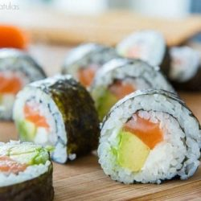
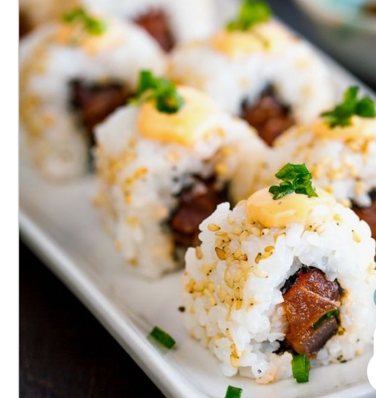
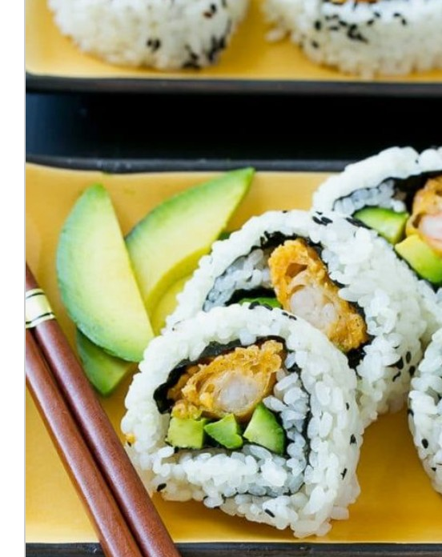
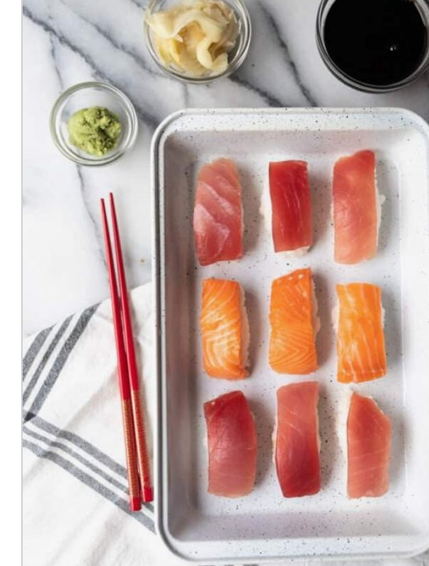
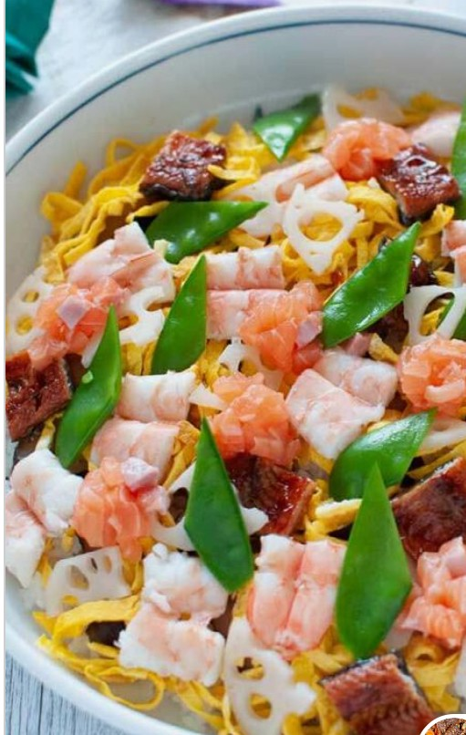

Sushi, a staple rice dish of Japanese cuisine, consisting of cooked rice flavoured with vinegar and a variety of vegetable, egg, or raw seafood garnishes and served cold. Restaurants specializing in sushi abound in Japan, where subtleties of preparation find a discriminating clientele, and the dish has gained popularity in the United States and elsewhere in the world.

Ingredients
S/N
Item
Measurement
1
Sushi seaweed
6 sheets
2
Prepared sushi rice
1 batch
3
Sashimi grade raw salmon
1/2lb
4
Cream cheese
4 oz
5
Avocado
1
6
Soy sauce
A drizzle
Instructions
Place the seaweed on a bamboo mat, then cover the sheet of seaweed with an even layer of prepared sushi rice. Smooth gently with a rice paddle.
Layer salmon, cream cheese, and avocado on the rice, and roll it up tightly. Slice with a sharp knife, and enjoy right away with soy sauce.
Other versions of sushi may include:
Spicy Tuna RollsSashimi grade tuna is tossed with siracha for a bit of kick, then rolled with nori and rice.

Shrimp Tempura RollCrispy tempura fried shrimp is rolled up along with fresh avocado into a super tasty sushi roll.

NigiriA ball of sticky rice is topped with your favourite sushi fresh out of sea fish, very easy to make.

Chirasuzushi (scattered sushi)This is your favourite sushi ingredients scattered over a bed of rice.